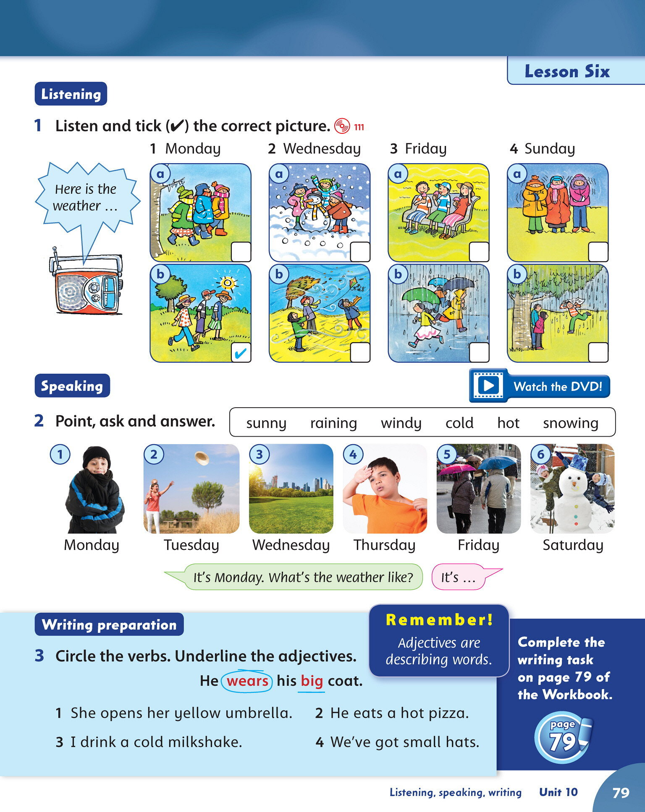
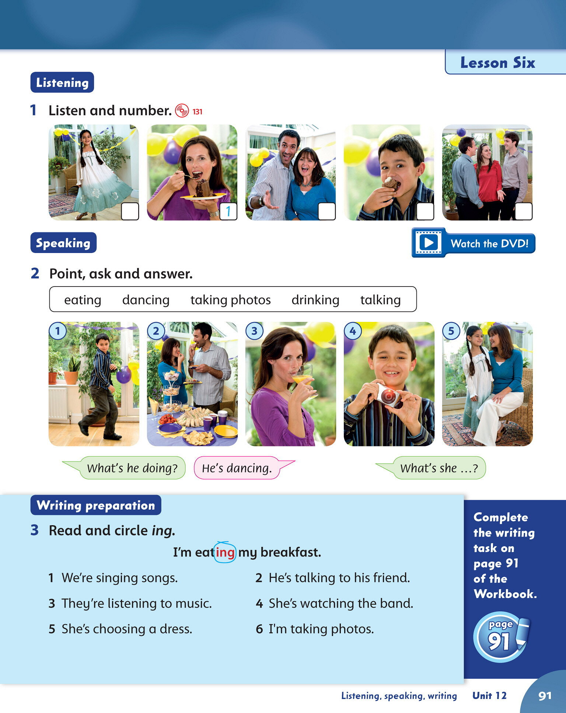

Exercise 1 — Present Simple (10 pts)
Complete the sentences with the correct form of the verb in brackets.
- He gets up (get up) at six o'clock.
- She goes (go) to school at eight o'clock.
- He doesn't like (not like) snakes.
- Does she work in a hospital? (do / does)
- She has (have) breakfast at seven o'clock.
- Where does he work? (work)
- My dad works (work) at night.
- He doesn't have (not have) dinner in the morning.
- She goes (go) to bed at nine o'clock.
- Does your mum start work at six o'clock? (start)
Exercise 2 — Present Continuous (10 pts)
Write the correct present continuous form of the verb in brackets.
- She is wearing (wear) a blue skirt.
- They are watching (watch) a video.
- He is eating (eat) the wedding cake.
- What are you doing? (do) I am dancing with my friends. (dance)
- She isn't sleeping (not sleep). She is talking (talk) to her friends.
- Look at Grandma. What is she doing? (do)
- We are cooking (cook) and cleaning (clean) the flat together.
- The band is playing (play) music.
- They are choosing (choose) party dresses.
- I am taking (take) photos of the party.
Exercise 3 — Comparatives (10 pts)
Complete the sentences using: bigger than · smaller than · taller than · shorter than
- The horse is bigger than the goat.
- The girl is taller than the boy.
- The boy is shorter than the girl.
- The sheep is smaller than the cow.
- An elephant is bigger than a cat.
- A baby sheep is smaller than a mummy sheep.
- The mummy cow is bigger than the baby cow.
- A goose is smaller than a horse.
- This cow is bigger than that cow.
- This goat is bigger than the other goats.
Exercise 4 — Adjectives (10 pts)
Circle all the adjectives in each sentence.
- She opens her yellow umbrella.
- He eats a hot pizza.
- I drink a cold milkshake.
- They've got long hair.
- He's wearing a big red coat.
- She's got curly brown hair.
- It's a sunny day.
- Put on your warm coat. It's cold outside.
- The little baby is happy.
- She's wearing a green and white dress.
Exercise 5 — Mixed Grammar (10 pts)
a) Have got (3 pts)
Complete with: 's got / 've got / hasn't got / haven't got
- She 's got brown hair.
- He 's got a bicycle.
- I haven't got a sister. (negative)
b) Can / Can't (3 pts)
Write can or can't.
- She can ride a bike. ✓
- He can't swim. ✗
- I can play the guitar. ✓
c) This / That / These / Those (4 pts)
Circle the correct word.
-
This
These
is my bag.
-
That
Those
are my books.
-
This
That
boy over there is tall.
-
These
Those
are my cousins over there.
👩🏫 Teacher:
Listening 1 → Class Book page 79 (Unit 10, Lesson 6). |
Listening 2 → Class Book page 91 (Unit 12, Lesson 6 — Track 131).
Answers below are from the book's audio script.
Listening 1 — Listen and tick (✓) the correct picture (10 pts)
Listen to the weather report. Correct answers: tick (✓) the correct weather picture for each day.

1 Monday
a
b
2 Wednesday
a
b
3 Friday
a
b
4 Sunday
a
b
⚠️ Verify these answers against the actual audio track before using this sheet.
Listening 2 — Listen and number (10 pts)
Correct order heard on Track 131.

⚠️ Verify these answers against the actual audio track before using this sheet.